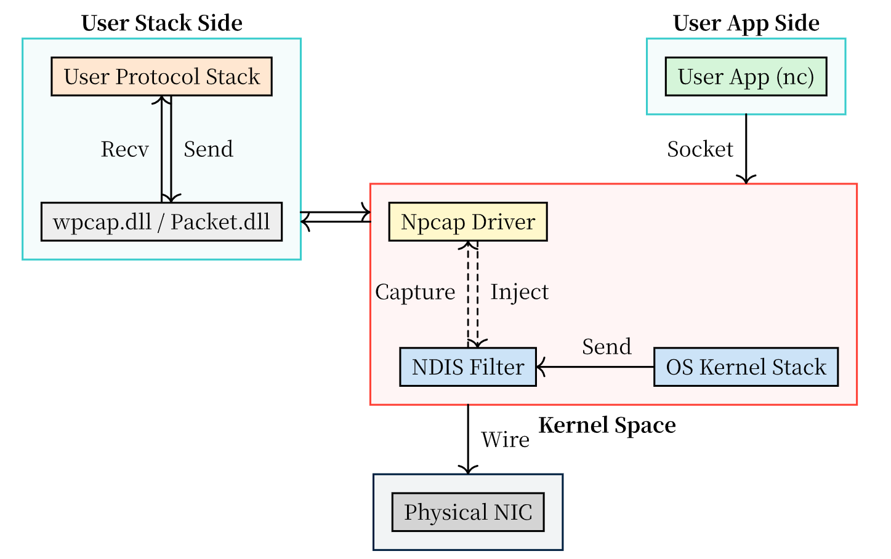
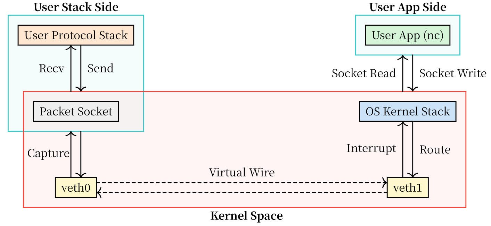

3. 纯 Linux/WSL2 环境配置（veth）
备注
本节适用于所有拥有完整 Linux 环境（包括 Linux 物理机、Linux 虚拟机、WSL2 等）并拥有 sudo 权限的同学。
本节从依赖安装、VS Code 配置和代码编译开始，介绍组件测试以及使用 veth 的集成测试流程。下面的软件安装命令以 Ubuntu/Debian 为例，其他发行版请使用对应的包管理工具。
如果使用 T2102、T2210、T2507、T2608 实验室中预装的 OSLab Ubuntu 虚拟机，请先按照 OSLab Ubuntu 环境配置 完成配置，再阅读本节的协议栈运行与集成测试步骤。
相比于传统的“Windows + 虚拟机 NAT”方案，使用 Linux 原生的 veth (Virtual Ethernet) 设备对进行开发具有以下优势：
抓包纯净：通过原生的虚拟化机制，只有协议栈相关的网络包，不会受到物理网络中广播包的干扰。
无限制：无网络号、主机号和物理网卡相同的限制（直接修改路由表）。
适用性广：适用于任何完整 Linux 的系统（物理机、虚拟机、WSL2）。
配置简单：提供自动化脚本，一键完成环境搭建，无需手动配置复杂的网络参数。
3.1. 安装 Linux 实验依赖
在 Linux 终端中执行：
sudo apt-get update
sudo apt-get install -y \
git ca-certificates build-essential cmake gdb \
libpcap-dev iproute2 ethtool \
libreadline-dev libncurses-dev \
wireshark tshark netcat-openbsd curl
首次执行 sudo 时，终端可能要求输入当前 Linux 用户的密码。输入时不会显示字符或星号，输入完成后按回车即可。
安装 Wireshark 时，如果出现 [More]，可按空格翻页或按 q 退出说明；随后若询问是否允许普通用户抓包，请选择 Yes 并确认。
3.2. 配置 VS Code
3.2.1. 本地 Linux 或 WSL2 开发
在 Linux 桌面中打开 VS Code，安装 Microsoft 发布的 C/C++ 和 CMake Tools 扩展。使用 WSL2 时，在 Windows 的 VS Code 中安装 Microsoft 发布的 WSL 扩展，并通过该扩展连接 Linux 发行版；C/C++ 和 CMake Tools 应安装在 WSL 侧。
3.2.2. 连接其他 Linux 主机或自建虚拟机
如果从 Windows 等系统远程连接 Linux，请先在 Linux 主机或虚拟机中安装并启动 SSH 服务：
sudo apt-get install -y openssh-server
sudo systemctl enable --now ssh
hostname -I
在本机的 VS Code 中安装 Remote-SSH 扩展，执行 Remote-SSH: Connect to Host...，输入 ssh <用户名>@<Linux主机IP>，将占位符替换为实际的普通用户名和 IP 地址，然后输入该用户的登录密码。
自建虚拟机需要先确保宿主机能访问 SSH 服务：可以使用 Host-only 或桥接网络；若使用 NAT 端口转发，则按配置的宿主机地址和转发端口连接。这个地址用于远程登录，后文的 192.168.254.2 用于协议栈集成测试。
连接成功后，将 C/C++ 和 CMake Tools 安装到 SSH 远程主机侧。若扩展详情页显示 Install in SSH: ...，点击安装；安装完成后应显示已安装并在该 SSH 主机上启用。
3.3. 下载并编译实验代码
在 Linux、WSL 或 SSH 远程窗口的终端中下载实验代码：
cd ~
git clone https://git.cs-lab.top/cslab/net-lab.git
cd ~/net-lab
如果已经有 ~/net-lab，直接使用已有项目。在 VS Code 中选择“文件 → 打开文件夹”，打开 Linux 上的 net-lab 项目根目录，确认其中包含 CMakeLists.txt。以下配置中的 ${workspaceFolder} 应指向这个目录。
先确认编译和调试工具能够使用：
cmake --version
gdb --version
打开 include/config.h，将非 TEST 分支中的 NET_IF_IP 改为下面的地址，与后文 setup_veth.sh 中的 STACK_IP 保持一致：
#define NET_IF_IP { 192, 168, 254, 2 }
#ifdef TEST 分支中的测试 IP 和 MAC 地址保持默认值。默认构建会同时编译组件测试和集成测试程序，因此首次编译前需要替换非 TEST 分支中的 XX 占位符。
保存文件后，在项目根目录配置并编译：
cd ~/net-lab
cmake -S . -B build -DCMAKE_BUILD_TYPE=Debug
cmake --build build
3.4. 离线组件测试与调试
eth_in、eth_out、arp_test、ip_test、ip_frag_test、icmp_test、udp_test 和 tcp_test 是离线组件测试，读取各自测试目录中的输入文件，不需要 veth、sudo 或 gdbserver。
可以在项目根目录运行，例如：
cd ~/net-lab
./build/eth_in testing/data/eth_in
./build/arp_test testing/data/arp_test
./build/ip_frag_test testing/data/ip_frag_test
使用 VS Code 调试时，请参照 Linux 组件测试的完整配置与操作说明 创建 .vscode/launch.json 和 .vscode/tasks.json。该节配置同样适用于 Linux 物理机、自建虚拟机和 WSL2。在“运行和调试”中选择当前协议对应的 Linux component test 配置，设置断点后按 F5 启动。
udp_server、tcp_server 和 web_server 属于在线集成测试，请继续完成下面的 veth 配置和使用步骤。
3.5. 原理对比
3.5.1. 传统方式：Windows / Linux 虚拟机 (NAT)
Windows 的 Npcap 方案与传统 Linux 虚拟机的 NAT 网卡方案，都通过已有网卡收发实验数据包。
在这些环境下，我们通常依赖 Npcap (Windows) 或直接在网络接口上 (Linux) 捕获和注入数据包。这些接口通常承担着访问互联网的功能（通过 NAT 或桥接），因此会有大量的背景流量（如 ARP 广播、SSDP 等）。

3.5.2. Linux 路径 (veth + Packet Socket)
在 Linux 环境下，我们利用 veth pair 构建虚拟链路。veth 就像一根虚拟的网线，连接着两端：
一端 (
veth1) 连接到 Linux 内核协议栈（扮演“客户端/对端主机”）。另一端 (
veth0) 被我们的用户态协议栈接管（扮演“服务器/实验协议栈”）。
数据流向如下：
发送 (App -> Stack): 用户态程序（如
nc）向实验 IP 发送数据 -> Linux 内核路由 ->veth1-> 虚拟网线 ->veth0-> BPF Filter (内核态过滤) -> Packet Socket -> 用户态协议栈。接收 (Stack -> App): 用户态协议栈 -> Packet Socket ->
veth0-> 虚拟网线 ->veth1-> Linux 内核协议栈 -> 用户态程序。

3.6. 环境搭建脚本 (setup_veth.sh)
为了简化 veth 设备的创建、IP 配置、路由设置以及关闭 Checksum Offload 等繁琐步骤，我们提供了一个自动化脚本 setup_veth.sh。
你可以直接下载 setup_veth.sh，保存到 net-lab 项目根目录；也可以按下面的内容手动创建该脚本，并赋予执行权限 (chmod +x setup_veth.sh)。
3.6.1. IP 地址选择说明
本方案利用 Linux 的路由机制将流量导向虚拟设备，因此 协议栈的 IP 地址无需与物理网卡处于同一网段。
为了避免与物理网络（如校园网 10.x.x.x 或家庭 WiFi 192.168.1.x）发生路由冲突，建议选择一个独立的私有网段（例如 192.168.254.x）。
配置完成后，通过 ip route 命令可以看到清晰的路由隔离：
# 物理网络路由 (例如无线网卡)
10.250.0.0/16 dev wlan0 proto kernel scope link src 10.250.53.27 metric 600
# 实验环境路由 (发往实验网段的流量走 veth1)
192.168.254.0/24 dev veth1 proto kernel scope link src 192.168.254.1
请务必确保代码框架中 include/config.h 的 IP 配置与脚本中的 STACK_IP 保持一致。
脚本中的协议栈 IP 默认为 192.168.254.2。如果这个网段与现有网络没有冲突，可以保持脚本默认值，并使用前面已填写的非 TEST 分支的 NET_IF_IP。
1 #!/bin/bash
2
3 # ================= 配置区域 =================
4
5 # 1. 你的协议栈 IP (必须与 include/config.h 中的 NET_IF_IP 保持一致)
6 # 建议使用 192.168.xxx.xxx 等私有网段，避免与物理网络 (如 10.x.x.x) 冲突
7 # 默认: 192.168.254.2
8 STACK_IP="192.168.254.2"
9
10 # 2. 网络前缀 (用于生成相关 IP)
11 # 默认: 192.168.254
12 NET_PREFIX="192.168.254"
13
14 # 3. 接口名称
15 VETH_USER="veth0" # 绑定给用户态协议栈的接口
16 VETH_KERNEL="veth1" # 内核/客户端使用的接口
17
18 # ===========================================
19
20 # 自动生成其他配置
21 # veth0 的 IP (必须与 STACK_IP 不同，但同网段，用于 driver_find 发现接口)
22 # 注意：我们不能给 veth0 配置 $STACK_IP，因为 driver_find 会拒绝与本机 IP 完全相同的接口
23 VETH_USER_IP="${NET_PREFIX}.3/24"
24
25 # veth1 的 IP (作为客户端/网关 IP)
26 VETH_KERNEL_IP="${NET_PREFIX}.1/24"
27
28 # 路由网段
29 SUBNET="${NET_PREFIX}.0/24"
30
31 echo "=== Setting up veth pair for Net-Lab ==="
32 echo "Configuration:"
33 echo " Stack IP: $STACK_IP"
34 echo " Prefix: $NET_PREFIX"
35 echo " Interfaces: $VETH_USER <-> $VETH_KERNEL"
36
37 # 1. 清理旧接口
38 if ip link show $VETH_USER > /dev/null 2>&1; then
39 echo "Removing existing $VETH_USER..."
40 sudo ip link del $VETH_USER
41 fi
42
43 # 2. 创建 veth pair
44 echo "Creating veth pair: $VETH_USER <-> $VETH_KERNEL"
45 sudo ip link add $VETH_USER type veth peer name $VETH_KERNEL
46
47 # 3. 启动接口
48 echo "Bringing up interfaces..."
49 sudo ip link set $VETH_USER up
50 sudo ip link set $VETH_KERNEL up
51
52 # 4. 配置 IP
53 # 给 veth0 配置一个同网段的 IP，以便 driver_find 能找到它 (它查找最长前缀匹配)
54 echo "Assigning IP $VETH_USER_IP to $VETH_USER"
55 sudo ip addr add $VETH_USER_IP dev $VETH_USER
56
57 # 给 veth1 配置网关 IP
58 echo "Assigning IP $VETH_KERNEL_IP to $VETH_KERNEL"
59 sudo ip addr add $VETH_KERNEL_IP dev $VETH_KERNEL
60
61 # 5. 路由调整
62 # 因为 veth0 和 veth1 都在同一个网段，内核会自动添加两条路由。
63 # 我们希望内核发往 $SUBNET 的包走 veth1 (这样才能通过 veth pair 到达 veth0 被我们捕获)
64 # 所以我们要删除 veth0 的自动路由
65 echo "Deleting kernel route for $VETH_USER..."
66 sudo ip route del $SUBNET dev $VETH_USER
67
68 # 6. 关闭 Checksum Offload (关键步骤)
69 echo "Disabling checksum offload..."
70 sudo ethtool -K $VETH_USER rx off tx off
71 sudo ethtool -K $VETH_KERNEL rx off tx off
72
73 # 7. 配置 IPv6 (双栈测试需要)
74 echo "Configuring IPv6..."
75 # 启用 IPv6
76 sudo sysctl -w net.ipv6.conf.$VETH_USER.disable_ipv6=0 > /dev/null
77 sudo sysctl -w net.ipv6.conf.$VETH_KERNEL.disable_ipv6=0 > /dev/null
78
79 # 配置 veth1 的 IPv6 地址 (作为网关/测试端)
80 # 对应 net_if_ip6 = fe80::1 (Link Local) 或者我们可以配一个 Global/ULA
81 # 这里我们配置一个 ULA 地址 fd00::1/64
82 VETH_KERNEL_IP6="fd00::1/64"
83 echo "Assigning IPv6 $VETH_KERNEL_IP6 to $VETH_KERNEL"
84 sudo ip -6 addr add $VETH_KERNEL_IP6 dev $VETH_KERNEL
85
86 # 注意：veth0 不需要配置 IPv6 地址，因为我们的协议栈会直接处理发往 fd00::2 的包
87 # 但是为了方便 ping6 fd00::2 能通，我们需要在 veth1 上添加邻居表项(NDP)或者路由
88 # 如果实现了 NDP，则不需要手动添加。如果没实现 NDP，需要:
89 # echo "Adding static NDP entry for fd00::2..."
90 # sudo ip -6 neigh replace fd00::2 lladdr 00:11:22:33:44:55 dev $VETH_KERNEL
91
92 # 8. 防止内核在 veth0 上响应 ARP (因为用户态协议栈要处理)
93 echo "Disabling ARP on $VETH_USER..."
94 sudo ip link set dev $VETH_USER arp off
95
96 echo "=== Setup Complete ==="
97 echo "User Stack Interface: $VETH_USER (Bind your tcp_server here)"
98 echo "Kernel Interface: $VETH_KERNEL (IP: $VETH_KERNEL_IP)"
99 echo "Test Command: nc $STACK_IP 60000"
100 echo "Web Test: curl http://$STACK_IP/"
3.7. 使用步骤
修改 config.h: 确保
include/config.h中非TEST分支的NET_IF_IP与脚本中的STACK_IP一致；如果修改了地址，请保存并重新编译。#define NET_IF_IP { 192, 168, 254, 2 } // 对应 192.168.254.2
运行脚本: 每次重启电脑后，或者需要重置网络环境时运行：
sudo ./setup_veth.sh运行协议栈: 在
net-lab项目根目录运行需要测试的程序。例如，启动 UDP Server：cd ~/net-lab sudo ./build/udp_server
测试 TCP 或 HTTP 时，将程序名改为
tcp_server或web_server。协议栈会自动发现并绑定到veth0接口。测试: 在另一个终端中，使用
nc或curl向协议栈 IP 发起连接。 UDP Server 测试:# 使用 nc 发送 UDP 数据包 # -u: 使用 UDP 模式 # 192.168.254.2: 协议栈 IP (需与 config.h 一致) # 60000: 协议栈监听端口 nc -u 192.168.254.2 60000
输入任意字符并回车，你应该能看到相同的字符被回显。
TCP Server 测试:
# TCP Echo 测试 nc 192.168.254.2 60000
Web Server 测试:
# Web Server 测试 curl http://192.168.254.2/
3.8. 调试方法
在 Linux 环境下，你可以使用 GDB 或 VS Code 进行调试。
3.8.1. VS Code 调试配置 (launch.json + tasks.json)
udp_server、tcp_server 和 web_server 需要 Raw Socket 权限。使用普通用户登录 VS Code 时，可以用 sudo 启动 gdbserver，再让 VS Code 连接进行调试。
先在 Linux 终端执行 gdbserver --version。如果显示版本号，说明已经安装；如果提示找不到命令，再执行：
sudo apt-get install -y gdbserver
请在 .vscode 目录下创建或修改以下两个文件，根据实际情况修改：
1. .vscode/tasks.json (用于以 sudo 启动 gdbserver)
{
"version": "2.0.0",
"tasks": [
{
"label": "Launch gdbserver with sudo",
"type": "shell",
"command": "sudo",
"args": [
"gdbserver",
"localhost:1234",
"${workspaceFolder}/build/udp_server"
],
"isBackground": true,
"problemMatcher": {
"owner": "gdbserver",
"pattern": {
"regexp": "^$"
},
"background": {
"activeOnStart": true,
"endsPattern": "^Listening on port [0-9]+$"
}
},
"options": {
"cwd": "${workspaceFolder}/build"
}
}
]
}
2. .vscode/launch.json (连接到 gdbserver)
{
"version": "0.2.0",
"configurations": [
{
"name": "udp_server (sudo via gdbserver)",
"type": "cppdbg",
"request": "launch",
"program": "${workspaceFolder}/build/udp_server",
"args": [],
"stopAtEntry": true,
"cwd": "${workspaceFolder}/build",
"environment": [],
"externalConsole": false,
"MIMode": "gdb",
"miDebuggerPath": "/usr/bin/gdb",
"miDebuggerServerAddress": "localhost:1234",
"preLaunchTask": "Launch gdbserver with sudo",
"setupCommands": [
{
"description": "Enable pretty-printing for gdb",
"text": "-enable-pretty-printing",
"ignoreFailures": true
},
{
"text": "set pagination off",
"ignoreFailures": true
},
{
"text": "handle SIGPIPE nostop noprint",
"ignoreFailures": true
},
{
"text": "handle SIGTERM nostop noprint",
"ignoreFailures": true
}
]
}
]
}
上面的 gdbserver 配置用于 udp_server，也可以把两处程序路径改成 tcp_server 或 web_server。它们需要 Raw Socket 权限，适合用 sudo gdbserver 启动后再让 VS Code 连接。首次启动这类调试任务时，VS Code 可能会在终端中提示输入 sudo 密码。
eth_in、arp_test、ip_test 等离线组件测试不需要访问真实网卡，不需要 sudo 或 gdbserver。调试 eth_in 时应使用普通 GDB 配置：cwd 设为 ${workspaceFolder}，args 设为 ["testing/data/eth_in"]。直接运行程序时使用：
cd ~/net-lab
./build/eth_in testing/data/eth_in
3.8.2. 命令行调试 (sudo gdb)
如果你更喜欢命令行，可以直接使用 sudo 运行 gdb：
cd build sudo gdb ./udp_server
3.9. Docker 环境 (可选)
如果你熟悉 Docker，也可以使用我们提供的 Dockerfile 构建一个包含所有依赖的隔离环境。
Dockerfile:
FROM ubuntu:22.04
# 避免交互式提示
ENV DEBIAN_FRONTEND=noninteractive
# 安装依赖
RUN apt-get update && apt-get install -y \
build-essential \
cmake \
libcap-dev \
iproute2 \
iputils-ping \
netcat \
curl \
ethtool \
gdb \
vim \
sudo \
tcpdump \
libpcap-dev \
&& rm -rf /var/lib/apt/lists/*
# 设置工作目录
# /app 将是您在运行时挂载代码的目录
WORKDIR /app
# 预创建 build 目录，确保编译环境就绪
RUN mkdir -p build
# 默认进入 bash
CMD ["/bin/bash"]
构建与运行:
# 1. 构建镜像
docker build -t net-lab .
# 2. 运行容器 (必须使用 --privileged 以允许创建 veth 设备)
# -v $(pwd):/app : 将当前项目目录挂载到容器内的 /app
docker run -it --privileged -v $(pwd):/app net-lab
进入容器后，你可以在 /app 目录下直接运行 ./setup_veth.sh 并进行编译测试，环境与物理机一致，或者使用 VS Code 的 devcontainer 插件开发。